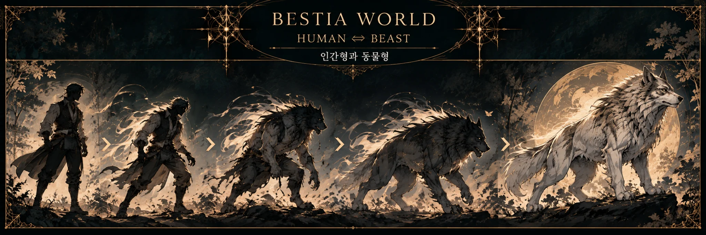
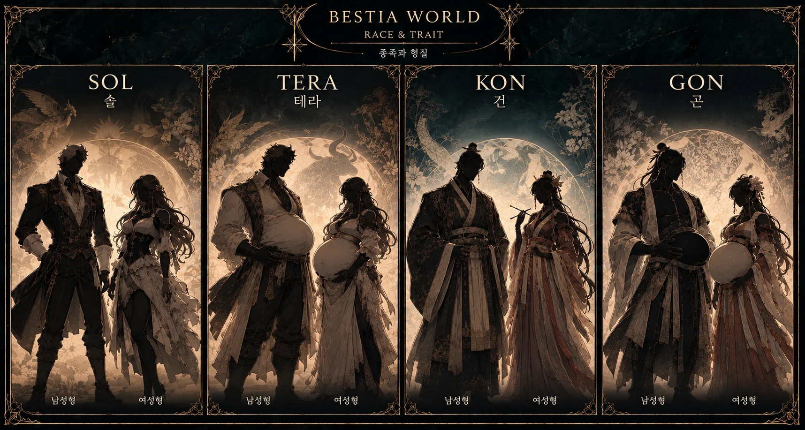
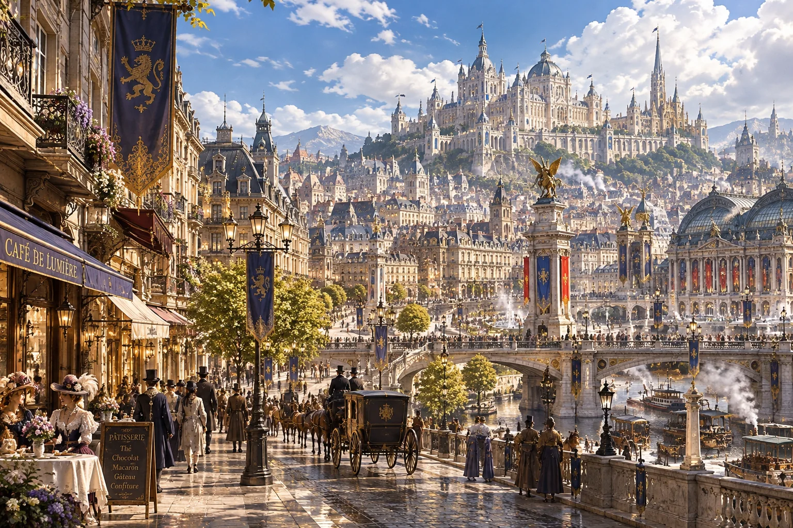
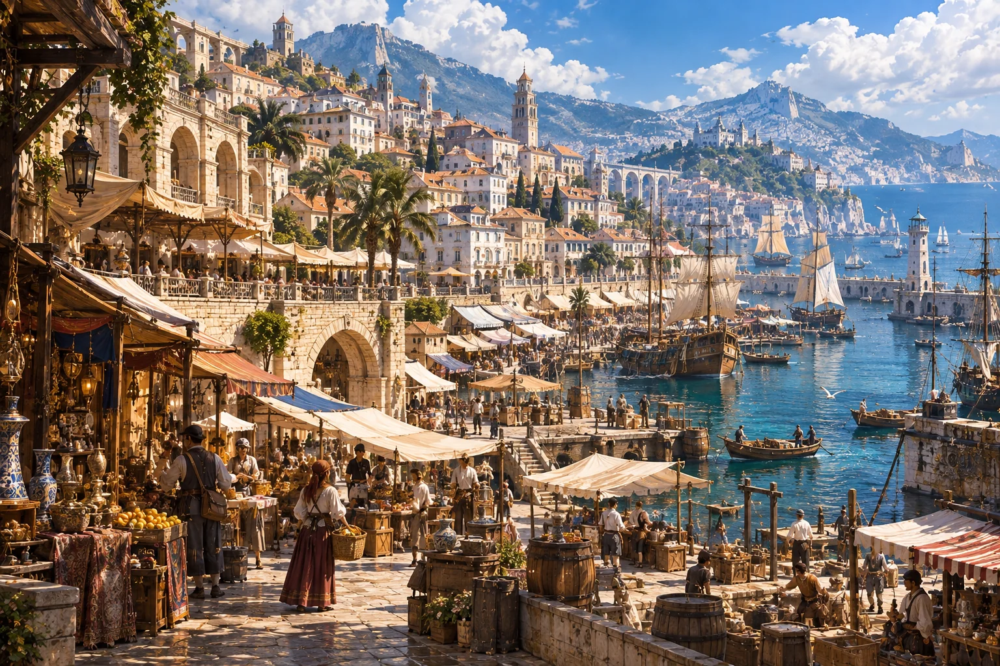

호랑이 · 무력과 명예
인물 도감에서 애런 티그란트 보기 ↗티그란트 공작가
HOUSE TIGRANT
무력과 무예, 명예를 중시하는 호랑이 가문. 황실에 충성하되 부당한 간섭을 거부하며, 수도 공작저와 별도의 영지를 유지한다.
AN EXPANDING ORIGINAL UNIVERSE
서로 다른 국가와 문화, 수많은 인물이 살아가는 하나의 세계.
이곳에서 베스티아의 이야기를 만나보세요.
베스티아는 인간이 존재하지 않는 수인들의 세계입니다. 문명은 대체로 1880년대 수준이며, 국가마다 문화와 제도가 다릅니다. 종족은 국적이나 성격, 직업을 결정하지 않습니다.
수인들은 평소 인간형으로 생활하며, 자신의 종족에 해당하는 완전한 동물형으로 변신할 수 있습니다. 인간형에서 동물 귀와 꼬리가 상시 드러나지는 않습니다. 동물형에서도 지성과 자아를 유지하며, 강한 감정이나 깊은 수면 중에는 무의식적으로 변신할 수도 있습니다.

베스티아에는 남녀 성별 개념 대신 두 가지 생식 형질이 존재합니다. 서방에서는 솔(Sol)·테라(Terra), 동방에서는 건(乾)·곤(坤)이라 부릅니다. 솔과 건은 수정이 가능하고, 테라와 곤은 임신과 출산이 가능합니다. 형질은 외형이나 체형과 무관하여 여성형 솔과 남성형 테라도 존재합니다.

페로몬으로 형질을 구별할 수 있지만 발정·지배·감정 조작 효과는 없습니다. 솔·건은 아버지·아들, 테라·곤은 어머니·딸로 호칭합니다. 이종족 사이에서도 자녀를 가질 수 있으며, 임신과 출산은 인간형에서 이루어집니다.
지도를 선택하면 아래에서 국가의 문화와 주요 인물을 바로 살펴볼 수 있습니다.

모바일에서는 지도를 좌우로 움직여 볼 수 있어요.
국가별 상세 설정은 앞으로 이곳에 추가할 예정입니다.
베스티아의 인물들을 국가와 신분에 관계없이 만나보세요. 캐릭터 프로필과 플레이 링크는 도감에 모아두었습니다.
캐릭터 도감 열기 ↗베스티아의 일러스트 아카이브를 준비 중입니다.

오랜 귀족의 전통과 새로운 산업의 시대가 공존하는 서방의 강대한 제국.
사자 황실이 통치하는 서방의 빅토리아풍 산업·귀족국가. 수도에는 웅장한 황궁과 귀족 저택, 석조 건축물이 늘어서고 가스등이 밝히는 대로를 따라 마차가 오간다. 증기기관차와 거대한 공장, 광산과 제철업이 발전하면서 전통적인 귀족 사회에도 변화가 찾아오고 있다.
황실 아래에는 늑대·곰·호랑이·뱀의 4대 공작가가 자리한다. 각 가문은 수도에 공작저를 두고 별도의 영지를 다스리며, 고유한 이해관계와 권력을 유지한다.
정통 황실 혈통의 사자만 형질과 무관하게 황위를 계승한다. 황제는 ‘알파’, 배우자는 ‘루나’로 칭한다.
귀족의 배우자는 외형·형질과 관계없이 ‘파르’로 칭한다. 파르는 독립 작위가 아니며 공작부인·공작부군 등의 성별 호칭은 쓰지 않는다.
황실 혈통은 사자의 갈기를 상징하는 머리카락을 평생 자르지 않는다.
종족과 귀족 신분은 별개다. 가문의 법적 계승권이 우선하지만 황위 계승에는 정통 사자 혈통이라는 별도 조건이 적용된다.
황실 무도회, 살롱, 티파티, 승마와 사냥 모임이 활발하다. 사교 시즌에는 귀족들이 수도에 모이고 혼인·후원·평판은 정치적 입지에도 영향을 미친다.
증기기관과 철도, 광산과 제철업, 금융과 국제무역이 발전했다. 화려한 귀족 거리와 공장지대, 노동자 거주지가 공존한다.
황실과 4대 공작가는 협력하면서도 서로 견제한다. 공작가들은 각자의 영지와 경제·군사 기반을 통해 제국의 정치에 영향력을 행사한다.
황족·귀족·평민의 신분 질서 속에서 신흥 자본가가 부상한다. 오래된 혈통과 새로운 부의 가치가 충돌한다.
정통 황족 중 사자만 황위를 계승한다. 솔·테라의 구분은 황위 계승 조건이 아니다.
48세 · 사자 · 솔. 금발 장발과 호박색 눈. 위엄 있고 온화하지만 냉철한 정치가.
붉은여우 · 남성형 테라. 붉은 머리와 녹색 눈. 영리하고 능글맞으며 사교와 정치에 능하다.
무력과 무예, 명예를 중시하는 호랑이 가문. 황실에 충성하되 부당한 간섭을 거부하며, 수도 공작저와 별도의 영지를 유지한다.
군사 지휘와 조직력에 뛰어난 늑대 가문. 높은 충성심과 결속력으로 유명하며, 대대로 사교적이고 고결한 명문가로 제국의 군사적 안정을 뒷받침한다.
광대한 영지와 광산, 제철업을 기반으로 막대한 부를 축적한 곰 가문. 군수 산업과 국경 방위를 담당하며 엄격한 위계와 실력주의를 중시한다.
외교·정보·정치·금융에 뛰어난 뱀 가문. 비타일 상회를 비롯한 국제 거래망과 정보망을 통해 귀족 사회와 상업계 모두에 영향력을 행사한다.

자유와 평등을 내세우지만, 부와 영향력이 실질적인 권력을 결정하는 해상무역 공화국.
지중해풍 해상무역 공화국. 시민이 선출한 의회와 집정관이 통치하며, 국적·종족·출신보다 자본과 실력이 사회적 지위를 좌우한다. 그러나 실권은 거대 상단과 유력 가문이 쥐고 있다.
시민이 선출하는 의회와 집정관이 통치한다. 상단과 금융가들의 자금력이 정책과 권력에 큰 영향을 미친다.
해상무역·항만·금융·상업이 발달했다. 세계 각지의 상선과 여행자들이 항구를 오간다.
다양한 종족과 출신이 공존하는 개방적인 사회지만, 극심한 빈부 격차가 존재한다.
법과 치안은 존재하지만 부와 영향력에 따라 집행이 달라진다. 권력층과 범죄조직의 유착도 만연하다.
따뜻한 해안을 따라 흰 석조 건물과 붉은 기와지붕, 아치형 회랑과 광장이 이어진다. 항구와 시장, 운하를 중심으로 상업이 발달했으며, 선술집과 거리 공연, 축제와 가면무도회가 도시를 활기차게 만든다.
화려한 상업지구와 부유한 상인의 저택 뒤편에는 빈민가와 밀수 창고, 불법 거래가 이루어지는 뒷골목이 공존한다. 사교 모임은 오락인 동시에 정치적 협상과 은밀한 거래의 장이 되기도 한다.
밀수·암시장·해적·청부업·정보 거래가 성행하며 합법 기업과 지하 조직이 복잡하게 얽혀 있다. 일부 범죄조직은 상단이나 운송업체 등의 합법 사업을 통해 활동한다.
리베르타 공화국의 거대한 지하 경매장. 도난품·금지 유물·기밀정보·희귀 혈통의 수인 등 온갖 불법 거래가 이루어지며 인신매매까지 자행된다. 막대한 자금과 정치적 비호로 치안 당국도 쉽게 개입하지 못한다.
소유주 · 체이스 발렌틴 — 뒷조직 ‘크로우’의 보스이자 발렌틴 상회 대표. 대경매장을 소유·운영하며 리베르타의 암시장에 막대한 영향력을 행사한다.
체이스 발렌틴을 정점으로 경매와 항만 운송, 정보 거래를 수행하는 뒷조직. 발렌틴 상회와 대경매장을 중심으로 활동하며 귀족 고객과 상단, 부패한 관리들과 이해관계로 얽혀 있다.
체이스 발렌틴 · 크로우의 보스이자 대경매장 소유주, 발렌틴 상회 대표.
인물 도감에서 체이스 발렌틴 보기 ↗특정 국가에 소속되지 않은 거대한 흑색 해적선. 리베르타 공화국을 비롯한 여러 국가의 상선과 군함을 습격하며, 검은 돛이 나타나면 상선들이 항로를 바꿀 만큼 악명이 높다.
카일스 · 범고래 수인 선장. 각국 해군의 추격을 피해 약탈·항해·기항을 반복한다.
인물 도감에서 카일스 보기 ↗